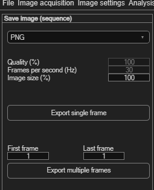
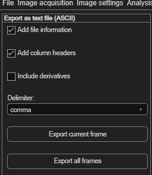
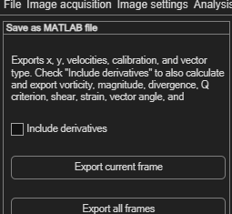
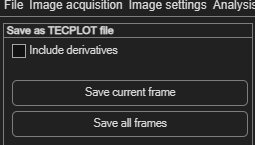
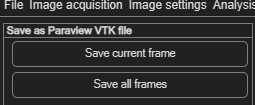

Exporting results
PIVlab can export your results in six different ways, all reachable from File → Export. Each one needs an existing analysis — run ANALYZE! first, or these panels will have nothing to work with.
| Menu item | Use it for |
|---|---|
| Still image or animation | A picture or video of the vector plot as displayed on screen. |
| Text file (ASCII) | Plain-text numeric data — the most portable, tool-agnostic option. |
| MAT file | MATLAB's native format, for further analysis in MATLAB. |
| Tecplot file | For visualization in Tecplot. |
| Paraview binary VTK | For visualization in ParaView. |
| All results to Matlab workspace | Loads every result straight into variables in your current MATLAB session — no file at all. |
Still image or animation
File → Export → Still image or animation opens a panel with a format dropdown. The choices depend on what your MATLAB installation supports: PNG, JPG, PDF and Matlab Figure are always available; Archival AVI and MPEG-4 appear too if your system has those video profiles.

| Field | Meaning |
|---|---|
| Quality (%) | Compression quality of the exported file. |
| Frames per second (Hz) | Playback frame rate, for video formats. |
| Image size (%) / Resolution (dpi) | Output scaling relative to the raw images (newer MATLAB) or DPI (older versions). |
- Click Export single frame to save exactly what's on screen right now.
- Or set First frame / Last frame (pre-filled with your analysed range) and click Export multiple frames to save an image sequence or a video covering that range.
Text file (ASCII)
File → Export → Text file (ASCII) — the most portable option, readable by essentially any tool.

| Option | Effect |
|---|---|
| Add file information | Includes source image file names etc. in the output. |
| Add column headers | Writes a header row naming each column. |
| Include derivatives | Calculates and adds derived quantities (see MAT file below for the full list). |
| Delimiter | comma, tab, or space. |
Click Export current frame or Export all frames.
MAT file
File → Export → MAT file saves in MATLAB's native format. By default it exports x, y, velocities, calibration, and vector type. Enable Include derivatives to also calculate and export vorticity, magnitude, divergence, Q criterion, shear, strain, vector angle, and correlation coefficient. Then click Export current frame or Export all frames.

Tecplot file
File → Export → Tecplot file has a single Include derivatives checkbox, then Save current frame or Save all frames.

Paraview binary VTK
File → Export → Paraview binary VTK has no extra options — just Save current frame or Save all frames.

All results to Matlab workspace
File → Export → All results to Matlab workspace is different from
the others: there's no panel or file dialog — it immediately writes variables directly into
your MATLAB base workspace, ready to use in your own scripts. It creates
x, y, u_original/v_original (raw
correlation output), u_filtered/v_filtered (after your validation),
u_smoothed/v_smoothed, plus vorticity,
velocity_magnitude, divergence, q_criterion,
shear_rate, strain_rate, vectorangle,
correlation_map, uncertainty_map and the calibration factors. Each
variable is a cell array with one entry per frame. After running it, check the Command
Window — PIVlab prints an explanation of every variable it just created.